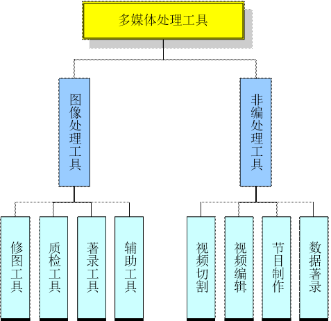
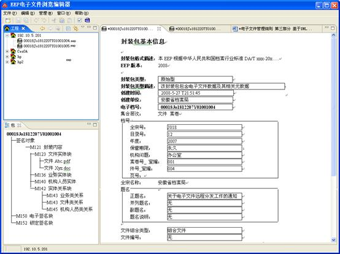
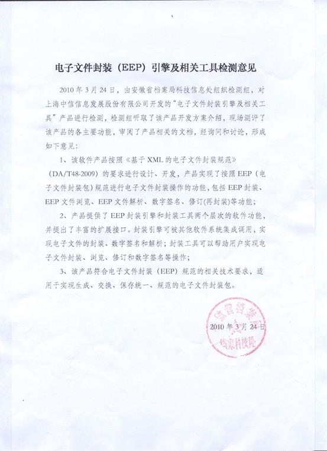

电子文件封装工具
封装被国内外档案界普遍认为是保持电子文件内容数据和元数据可靠联系的最有效方法。电子文件封装（Electronic records Encapsulated Package, EEP）技术通过规范电子文件的封装过程，为电子文件提供统一的封装格式，保证电子文件及其元数据的完整合一性，实现电子文件的自包含、自描述和自证明。做到封装文件格式和计算机的软硬件无关，利于电子文件长期保存、交换和利用。
我司和安徽省档案局合作，参考国家标准《基于XML的电子文件封装规范》（DA/T48-2009）完整地实现了电子文件封装，形成具有专利技术（专利号：200910194677.2，200910194678.7）的EEP封装包格式，为推进电子文件中心建设并实现归档电子文件的长期、有效保存奠定了基础。
电子文件封装工具的功能模块描述如下：

电子文件封装工具的技术架构如下图所示：

客户端工具界面如下：

鉴定证书：

主要特点：
- 1. 完全符合国家标准《基于XML的电子文件封装规范》（DA/T48-2009）要求，并通过安徽省档案局权威奠定；
- 2. 在严格遵循DA/T48-2009规范的基础上形成了具有专利技术的封装包格式，进一步保证了封装包的真实性、完整性、可用性；
- 3. 采用Eclipse插件技术开发，客户端工具界面操作便捷，兼容性好、扩展性强；
- 4. 将整个封装工具拆分成封装引擎和客户端工具两部分，实现了模块化设计和开发，使封装引擎可以广泛应用于各个应用系统（比如嵌入第三方OA系统）。